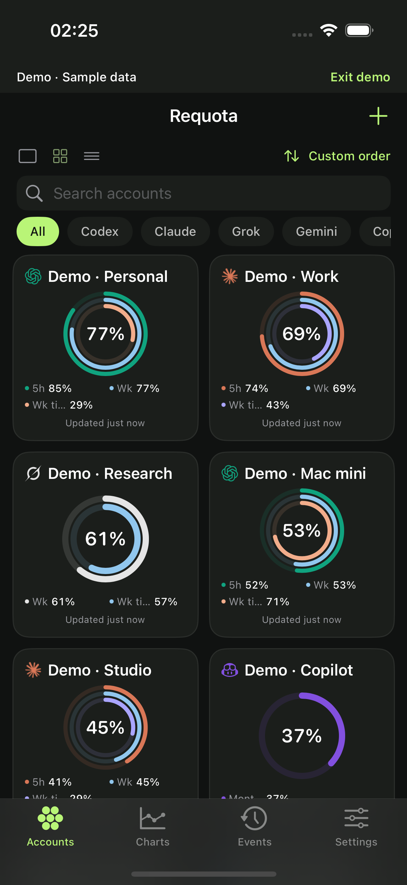
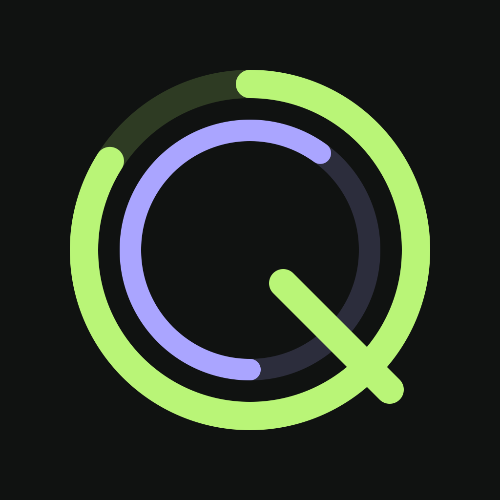
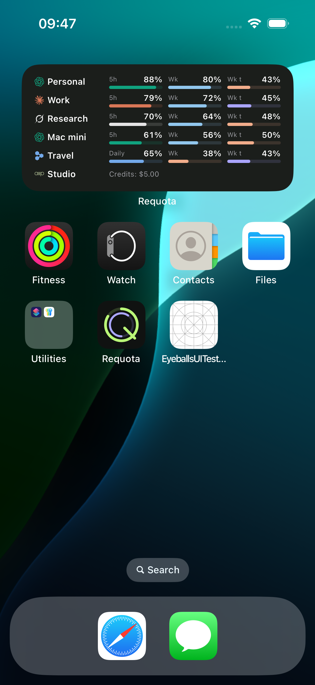
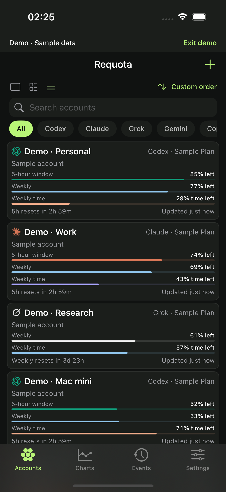
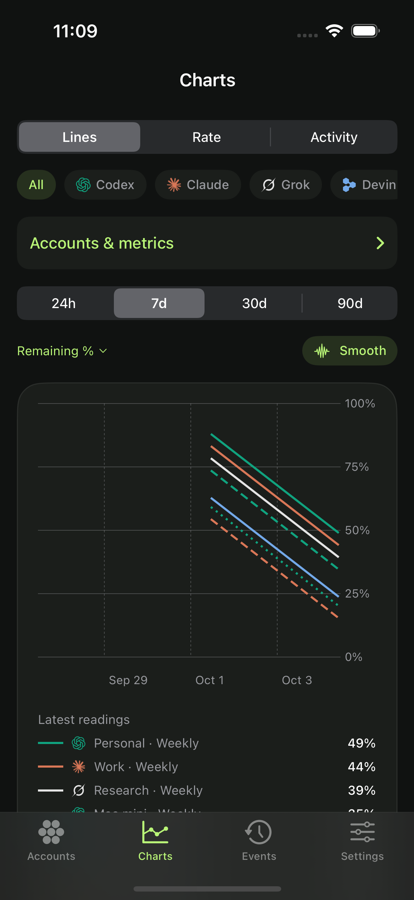
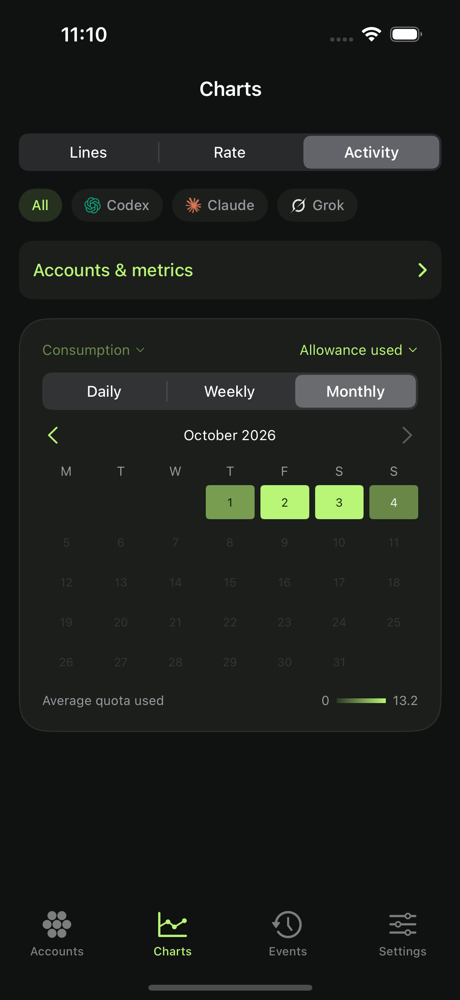
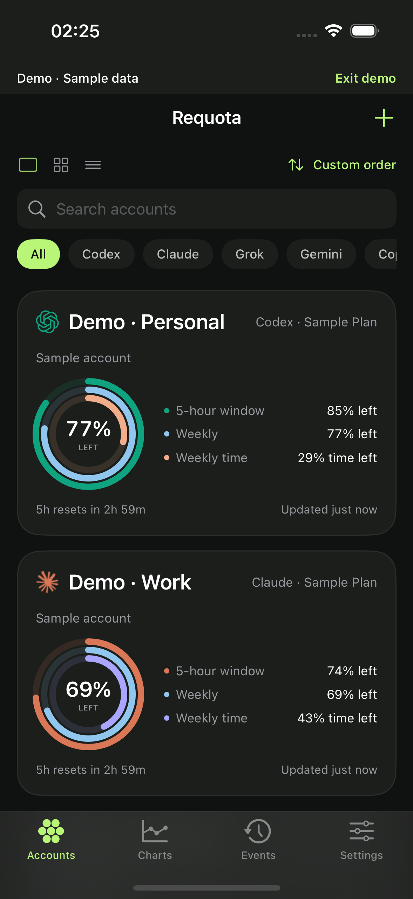

01
Your AI usage at a glance
Remaining allowance and reset times across your accounts.


Limits, resets & widgets
Aaron Rucinski
Remaining allowance and reset times across your accounts.

Choose rings or compact rows for your Home Screen.

Compact bars, saved order and provider filters.

Usage history, rate charts and interactive comparisons.

Activity heatmaps with a breakdown for each day.

Usage remaining and time to reset, in your colours.

Existing simulator captures with sample data. Final captures and upload sizes are still to be prepared.
Check remaining AI usage and reset times across your accounts. Customise your dashboard and widgets, and compare usage trends over time.
Keep track of your AI accounts in one place. Requota shows remaining usage, reset times and available credit balances, with widgets for a quick check throughout the day.
Connect your accounts directly on your iPhone, including multiple accounts from the same provider. Give each a name, organise them by workstream and see which has allowance left.
Codex, Claude, Grok, Gemini CLI / Code Assist, GitHub Copilot, Cursor, Cline, Kimi Code, Perplexity, Devin and Amp. Available details can include credit balances, extra spending and model-specific allowances.
Credentials are stored in your iPhone's Keychain. Usage history is stored locally. The source code is public, with a link in Settings.
Requires an account with a supported provider. Available limits, balances and reset details depend on the provider and plan. History builds from readings collected by Requota. Background and widget refresh timing is controlled by iOS.
Requota is an independent app and is not affiliated with the listed providers.
A concise benefit-led opening, concrete features and a short availability note. Emphasise multiple accounts per provider, custom layouts and dense widgets. Avoid claims of continuous tracking, guaranteed alerts or universal token/cost measurement.
Leads with remaining limits and direct phone access, then groups widgets, provider values and privacy. Its listing specifies one account per provider; Requota can make multi-account support more prominent.
Closest feature breadth: multiple accounts, reset timers, pace, widgets, history and heatmaps. Its copy is extensive; use a shorter version of that feature coverage for Requota.
Makes subscription limits, trends and widgets understandable. Requota's opening should be similarly concrete while describing its broader provider coverage. The listing contains mixed platform copy, so avoid treating every listed feature as an iPhone feature.
Promotes comparisons, detailed data and open source, while clearly explaining its Mac companion requirement. Requota connects on the iPhone; describe that positively without comparison claims.
Listings checked 4 October 2026. These notes describe positioning and copy, not independent verification of competing apps.
Creating Your Product Page · Platform version information · Screenshot specifications
This is a local review draft. No App Store metadata has been changed or submitted.